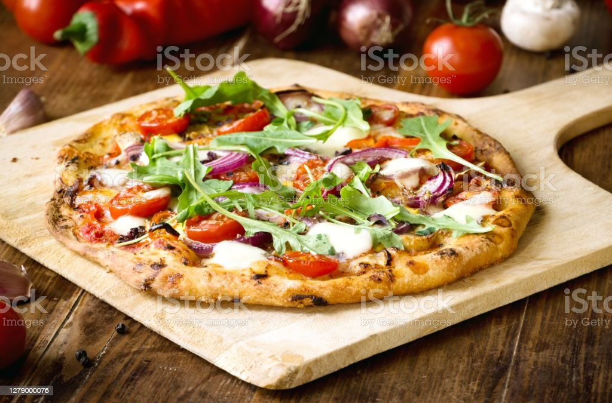

Veggie Pizza

Description
Here's my version for a quick veggie pizza, based on the combinations offered by many pizza chains. You can make adjustments to the quantities and choice of vegetables depending on what you like.
Ingredients
- 1 (12 inch) pre-baked pizza crust
- 2 tablespoons olive oil
- 1 cup seasoned tomato sauce
- ½ cup sliced onion
- 1 cup fresh sliced mushrooms
- ½ cup chopped green bell pepper
- ¼ cup chopped black olives
- 2 cups shredded mozzarella cheese
Steps
- Preheat the oven to 350 degrees F (175 degrees C).
- Place the pizza crust on a large cookie tray or pizza pan. Brush the crust evenly with olive oil. Spread tomato sauce over it with a spatula or back of a spoon. Sprinkle vegetables evenly over the sauce, and top with cheese.
- Bake for 10 to 12 minutes, or until cheese has melted and is bubbly. Let cool for 2 to 3 minutes before cutting.